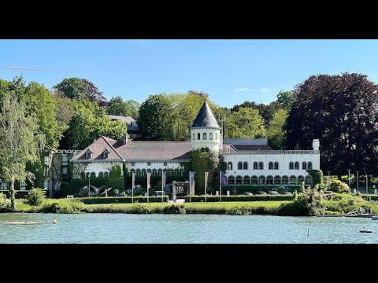

Dit is een lijst van kastelen in de Belgische provincie Waals-Brabant. In de lijst zijn alleen die kastelen en voormalige kastelen opgenomen die verdedigbaar waren of zo bedoeld zijn, en voor bewoning bestemd waren. Een deel van de kastelen in de lijst is op dit moment een landhuis dat gebouwd is op de fundamenten van een kasteel. In de context van Brussel, de stad brussel is de hoofdstad van belgië, van de vlaamse gemeenschap, het vlaams gewest, de franse gemeenschap en het brussels hoofdstedelijk gewest.
de gemeente telt ruim 196. 000 inwoners, waarvan ongeveer een derde in de historische vijfhoek woont, ongeveer de helft in de noordelijke uitbreiding, in de deelgemeenten laken, neder-over-heembeek en haren en de rest in de buurten rond de louizalaan, het ter kamerenbos en in de oostelijke uitbreiding, de europese wijk, waarvan het grootste gedeelte ook bij de gemeente hoort. In de context van Brussel, het justitiepaleis van brussel is een gerechtsgebouw gelegen aan het poelaertplein in brussel, belgië. met een bebouwde oppervlakte van 26.
Kasteel is een verzamelbegrip voor zelfstandige, versterkte bouwwerken uit de middeleeuwen die onder de toenmalige militaire omstandigheden te verdedigen waren. De benaming werd niet gebruikt in de tijdsperiode dat de werken gebouwd werden, maar is van later datum, toentertijd waren woorden als stins, borg of burcht en havezate gebruikelijk. De benaming kasteel wordt ook wel gebruikt voor jongere bouwwerken die qua vorm aansluiten bij de middeleeuwse burcht. Het kasteel combineerde oorspronkelijk de functies van verdedigbaarheid en bewoonbaarheid aan een beperkte groep mensen, variërend van een adellijke familie tot een militair garnizoen. De Bilderbergconferentie van 2000 werd gehouden van 1 t/m 4 juni 2000 in het Hotel Château Du Lac in Genval, België.
De provincie Brussel biedt naast het bezoek aan Kasteel du lac genval nog vele andere interessante activiteiten en bezienswaardigheden die uw bezoek compleet maken.
Bewonder de UNESCO werelderfgoed Grand-Place
Bezoek het beroemde symbool van Brussel
Ontdek de officiële residentie van de koning
Geniet van kunst van Vlaamse Primitieven tot moderne kunst
Adres: Meer van Genval, België
Plan uw bezoek aan Kasteel du lac genval en reserveer uw tickets online. Vul onderstaand formulier in en wij nemen zo spoedig mogelijk contact met u op.